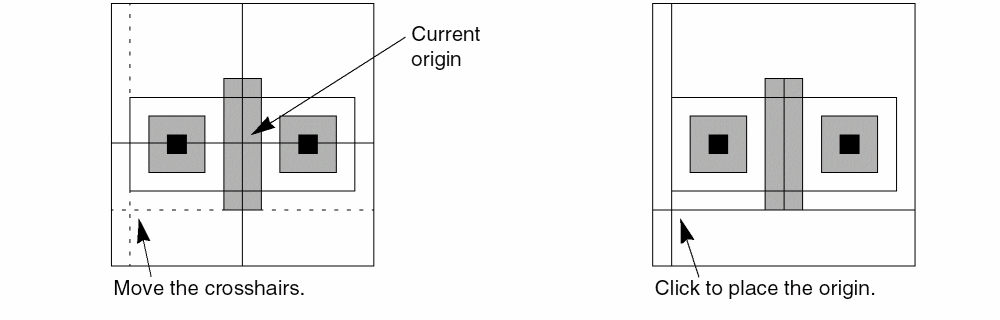
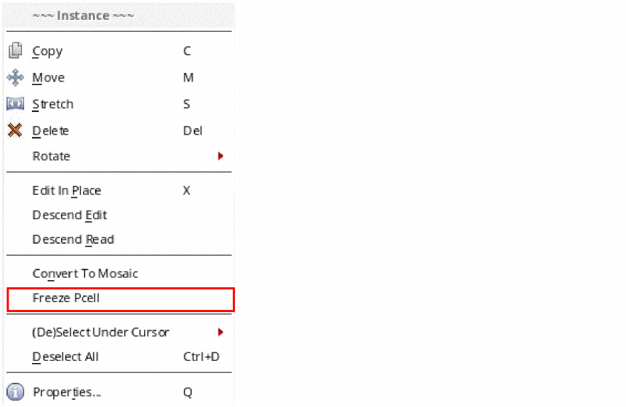
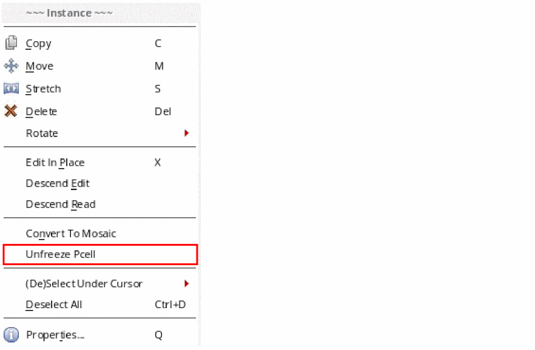
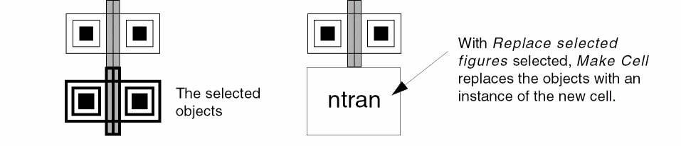
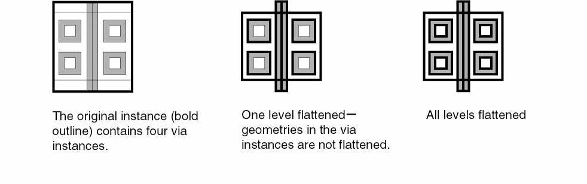
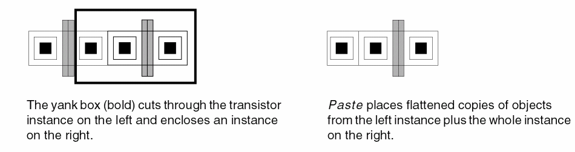
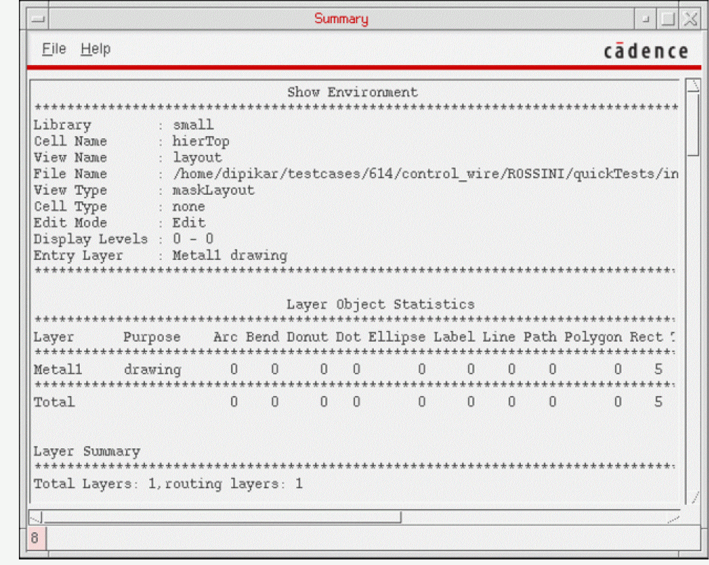

5
Working With Hierarchical Designs
This chapter contains these topics:
- Hierarchical Designs
- Hierarchical Editing
- Embedded Module Hierarchy Designs
- Listing the Data In Cellviews
- Refreshing Memory after Editing
Hierarchical Designs
Hierarchical designs are created by placing instances of other references to cellview inside other cellview.
Levels of hierarchy are numbered from top to bottom, with the top cellview having the lowest number. The top cell is the cellview you are currently viewing in a design window, unless you have descended into the hierarchy or are using Edit In Place.
In the above figure, when you view Top cell, it is level 0. When you view Cell C or Cell D, it is considered level 1, and instances Cell A and Cell B are considered level 2.
Master Cells and Cell Instances
When you place a cellview within another cellview, the placed reference of the cellview is called an instance. The placed instance now has a master cellview. In the above example, Cell A has been placed twice in the design. If you edit the master of Cell A, all instances of that cellview are changed.
Checking for Instance Recursion
You can prevent commands such as Create Instance, Make Cell, and Search/Replace from creating an instance of itself in a cellview by turning recursion checking on in the Editor Options form.
To automatically check for recursion when placing instances,
-
From the cellview window menu, choose Options – Editor [
Shift-e].
The Layout Editor Options Form opens. - Click Recursion Check.
- Click OK.
Changing the Origin of a Cellview
| Support for Objects | |
To change the origin of the cellview,
-
From the cellview window menu, choose Edit – Advanced – Move Origin.
-
Move the pointer where you want the new origin.
Two crosshairs showing the new X and Y axes follow the pointer.

Hierarchical Editing
Descending into a Cellview
The Descend command lets you descend into any level of an instance hierarchy, and the Descend form lets you choose the view type/name when descending into instances.
-
Choose Edit – Hierarchy – Descend Edit or Descend Read.
You can choose whether you want to edit using Descend Edit, as long as the parent is opened in edit mode, or read only using Descend Read that allows you to descend into an instance and view the contents without the ability to edit the instance. -
Optionally you can choose to be prompted for the view type by pressing F3 to bring up the Descend Options Form and checking the box.
The default is set so such that you are not prompted for the view type. If the Prompt For View Name field is not set, and the master cell of the instance has more than one view type available, the command will determine which cellview to descend into. If the Prompt For View Name field is set, and the master cell of the instance has more than one view type available, a form is displayed containing a cyclic field with all the possible view names listed. You can then select the cellview to descend into. By selecting Prompt for View Name, each time you descend into a cellview, you will be prompted for the view type. -
Click the instance whose cell you want to edit. You can use the
Spacebarkey, to toggle between the overlapping objects under the pointer. (see Cycling Through Preselected Objects) - Return up the hierarchy by choosing Edit – Hierarchy – Return To Level [b] or Return [Shift + b]. Alternatively, you can right-click and select Return on the Layout context menu. You can also choose Edit – Hierarchy – Return To Top, to return to the top level of the instance hierarchy.
You can set in advance which mode you prefer using the leHiDescend SKILL function. It has an optional text string t_mode specifying the mode in which to open the selected instance. When "nil", the instance is opened in the same mode as its parent. When "read", the instance is opened in read mode. When "edit", the instance is opened in edit mode if its parent is open in edit mode; otherwise, a window pops up stating that the instance cannot be opened in edit mode and advising that you open it in read mode. When the t_mode argument is not specified, automatically selects the edit mode to use when descending into the hierarchy.
Returning to a Different Hierarchy Level
If you have use Edit in Place or Descend, you can return to a higher level in the hierarchy.
To return to a specific level,
- To return up the hierarchy by choosing Edit – Hierarchy – Return To Level [b] or Return [Shift + b].
- When choosing Return To Level, click a cellview name in of the cellview.
-
Click OK.
If you are using Edit In Place, the window border changes to show the cell you chose.
If you previously used Descend, the window contents change to show the cell you chose.
Editing a Cell in Place
You can edit the master cell of an instance while viewing the instance in the current cellview. This is called editing in place (EIP).
The behavior of the Edit In Place command differs based on the selection mode. Consider the following design that illustrates the difference between the two modes. Cellview cv1 contains the instance ILevel1.
Using the Spacebar key, you can toggle between the overlapping objects under the pointer. You can also choose Edit – Hierarchy – Return To Top, to return to the top level of the instance hierarchy.
When you have created a group and you select the Edit In Place option, you can use the Remove from Group option in the context-sensitive menu to remove a shape from the group.
Editing in Place into an Instance Array
When editing in place into an instance array, the Select Array Member Form appears which allows you to enter the row and column information for the array member you want to edit.
The instance ILevel1 contains a polygon, the Pcell instance ILevel2pcell, and the instance Ilevel2.
Edit In Place in Pre-Selection Mode
In cv1, select ILevel1 and then run the Edit - Hierarchy - Edit In Place command or right-click the selected ILevel1 and select Edit In Place from the context menu. The master cellview of ILevel1 displays for editing in place. Because you can only top-level instances, the ion mode lets you EIP only one level in the hierarchy. To EIP other levels of the hierarchy, select the instance again and run the Edit In Place command each time to descend the hierarchy. To ascend the hierarchy, select Edit – Hierarchy – Return To Level [b] or Return [Shift + b].
Edit In Place in Post-Selection Mode
The behavior of the post-selection mode Edit In Place command depends on the area clicked for selection. Invoke the Edit - Hierarchy - Edit In Place command and then click the bounding box of ILevel1. The following situations are possible:
-
If the click point is on the bounding box of
ILevel2, the master cellview ofILevel2becomes the cellview to be edited in place. The banner at the top of the window changes to show that the master cell for that instance is open for edit. If the EIP Surround is off in the Display Options form, only the cell to be edited in place appears. -
If the click point is in the area of
ILevel2pcell, the message “Cannot edit in place a parameterized cell” displays because the cellview at the lowest level in the hierarchy at the point of click is a Pcell. If the click point is at an empty area within theIlevel2pcellbbox, there is a beep sound and the “Point at a shape in the cellview to be edited-in-place” prompt. -
If the click point is in the area of the polygon, the master cellview of
ILevel1becomes the cellview to be edited in place. -
If the click point is in an empty area in
ILevel1, there is a beep sound and the “Point at a shape in the cellview to be edited-in-place” prompt.
In the post-selection mode, when the pointer is over a shape of the cellview to be edited in place, the shape is highlighted. You can EIP ‘n’ levels; the destination cellview (master of the lowest instance in the hierarchy) should not be a Pcell. To return up the hierarchy, select Edit – Hierarchy – Return To Level [b] or Return [Shift + b].
Freezing and Unfreezing Pcell Instances
For Pcell editing, all geometric updates are performed through the Pcell parameters. Also, stretch handles provide you with a graphical way to update Pcell geometries. However, these graphical updates are also internally managed through Pcell parameters. For user-defined Pcells, there may be a situation when the desired Pcell editing cannot be performed by the supported Pcell parameters. In such cases, you can use the freeze and unfreeze Pcells options. The freeze and unfreeze commands enable you to perform Pcell editing that is not supported by the Pcell parameters.
The freeze Pcells option enables you to convert a Pcell instance to a non-Pcell instance of a new master created on the disk. Similar to any other instance, once you freeze the Pcell instance, you can use the EIP command to perform geometric updates to the design master.
The unfreeze Pcells option enables you to convert the frozen non-Pcell instance to its original Pcell instance.
You can use one of the following methods to use the freeze and unfreeze options:
-
Use the below mentioned SKILL functions use the freeze and unfreeze options:
- Use the leFreezeInst function to convert a Pcell instance to a non-Pcell instance of a new master created on the disk. This function preserves the geometry, connectivity, and cross-probing with schematic information of the instance.
- Use the leUnfreezeInst function to convert the frozen non-Pcell instance to its original Pcell instance. All editing that has been performed on the non-Pcell instance is not preserved.
-
Use the context-sensitive menu options, Freeze Pcell and Unfreeze Pcell.
-
The Freeze Pcell option is available in the context-sensitive menu of a Pcell instance. This option enables you to freeze a Pcell instance.In the Freeze Pcell Instance Form, you specify the library, cell, and view of the non-Pcell instance of the new master created on the disk.Alternatively, you can use the supressFreezePcellUI environment variable to freeze a Pcell instance without displaying the Freeze Pcell Instance Form.
-
The Unfreeze Pcell option is available in the context-sensitive menu of a frozen non-Pcell instance. This option enables you to unfreeze a frozen non-Pcell instance.
-
The Freeze Pcell option is available in the context-sensitive menu of a Pcell instance. This option enables you to freeze a Pcell instance.
Using the Tree Form
The Tree command displays a list showing the hierarchy of cellview instances in the current cellview.
To list the hierarchy of instances in the current cellview,
-
Choose Edit – Hierarchy – Tree.
The Tree Form appears. -
Set Display to one of the following:
- To list the hierarchy from top level to stop level, select the Top to stop level option.
- To list the hierarchy from the current level of hierarchy to the stop level, select the Current to stop level option.
- To list the hierarchy from the top level to the current level of hierarchy, select the Top to current option.
- To list the hierarchy from the current level of hierarchy to a level of hierarchy that you specify, select the Current to user level option.
Note: The Display Levels: Start and Stop settings on the Display Options form limit the number of levels reported by this command. -
Click OK.
A text window, Tree, listing the hierarchy appears. - Choose File – Close to close the window.
Tree Window Information
The cellview instances information lists the hierarchy of instances in this cellview or the instances above or below the edit in place cell. The number in parentheses represents how many times that instance appears in the design.
Indents show that instances of the indented cells are inside the instance listed above.
Using the Print Hierarchy Tree Command
The Print Hierarchy Tree command displays a list showing the hierarchy of cellview instances in the selected cellview.
To list the hierarchy of instances in the selected cellview,
-
Choose Tools – Print Hierarchy Tree from the CIW.
The Print Hierarchy Tree Form form appears. - Select the Library, Cell, and View for which you want print the hierarchy tree.
-
Click OK/Apply.
The text window, Hierarchy Tree, listing the hierarchy appears.
The Print Hierarchy Tree command has better performance compared to the Edit – Hierarchy – Tree command. This command lets you print the hierarchy tree without the need to open the design, which could take long time to open for a large design.
Hierarchy Tree Window Information
The cellview instances information lists the hierarchy of instances in this cellview or the instances above or below the edit in place cell. The number in parentheses represents how many times that instance appears in the design.
Indents show that instances of the indented cells are inside the instance listed above.
Making Hierarchy Editable
Use the Make Editable command to switch to the edit mode for updating the hierarchy.
-
Choose Edit – Hierarchy – Make Editable.
The Make Readonly/Editable Form opens. This form lists master cellviews of all the instances existing in the current cellview. - To list only specific master cellviews, use the Filter options to specify a search criteria.
- Select a Readonly master cellview in the left pane and click Make Editable. Alternatively, select an Editable master cellview in the left pane and click Make ReadOnly. You can select multiple master cellviews and change their mode.
Making Cells
You can use the Make Cell command to add levels of hierarchy.
You can copy selected objects in the current cellview into a new cell with the layout editor.
To create a cell from objects in your layout,
- Select the objects you want to place into a new cell.
-
Choose Edit – Hierarchy – Make Cell.
The Make Cell Form opens. - Type the library, cell, and view names for the new cell.
- In the Make Cell form, do one of the following:
-
Click OK.
The lowerLeft point of the bounding box of the created cell will be placed at the origin (0,0).If you type the name of an existing cell, a dialog box lets you choose to overwrite the existing cell with a new one.
Flattening Instances
The Flatten command copies the contents of a cell or array up one or more levels in the hierarchy.
To display the detail in all instances you want to flatten,
-
Choose Options – Display [
e].
The Display Options Form opens. - Set Display Controls to display the detail in all instances you want to flatten.
- Click OK.
-
Choose Edit – Hierarchy – Flatten.
The Flatten Form opens. - Set the Hierarchy Level to one level, displayed level, or user level.
-
Click OK.

Copying and Cutting Through the Hierarchy
Yank and Paste can cut and copy all or part of instances and shapes in a designated area.
To copy parts of cell instances,
-
Choose Options – Display [
e].
The Display Options Form appears. - Set Display Controls to display the detail in all instances you want to copy.
- Click OK.
-
Choose Edit – Basic – Yank [
y].
The Yank Form opens. - Set the Yank Levels.
- Click and drag to create a box around the area you want to yank.
-
Choose Edit – Basic – Paste [
Shift-y]. -
Click to place the copies.

Embedded Module Hierarchy Designs
Uniquifying the Cellview
Cellviews that contain EMH elements must be uniquified before making changes involving hierarchical objects. Examples would be creating, deleting, or editing objects with hierarchical names. An example of an edit operation that requires you to uniquify the cellview is the creation of an instance using a hierarchical path name.
The uniquification feature checks out the VLS XL or a higher license. The command works only on oacMaskLayout view types.
-
Select Tools — Uniquify in the CIW.
This opens the Uniquify Form. -
Specify the library, cell, and view names in the Library, Cell, and View fields. If uniquification happens successfully, a message displays after its completion.
If the cellview is already uniquified, a message appears to inform you about it. If the specified cellview cannot be opened, the command exits displaying an appropriate message about the failure.
The license is checked back in when the Uniquify form is closed.
Listing the Data In Cellviews
To display a summary of the contents of this cellview,
-
Choose File – Summary.
A Summary Window containing the summary appears.
 - Choose File – Close to close the window.
Refreshing Memory after Editing
Another user might edit a master cellview that is instantiated in the cellview you currently have open. You can update the memory of your computer to reflect the results of such edits with the Refresh command.
- Choose Edit – Hierarchy – Refresh.
- In the Refresh Cellviews Form, set any instances you want to update.
-
Click OK.
The cellview is redrawn to show changes made to the master cells.
Return to top